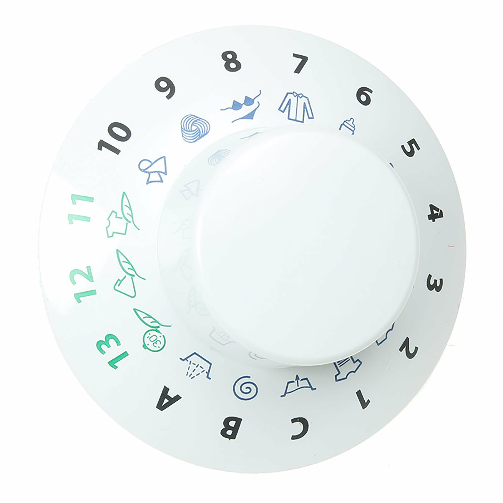

ERIC HU .. BIG TECH .. OIL
Clothes washer technology developed as a way to reduce the manual labor spent, providing an open basin or sealed container with paddles or fingers to automatically agitate the clothing.
First patent 1691 +
Henry Sidgier issued a British patent for a rotating drum washer +
1790s Edward Beetham sold numerous "patent washing mills" in England +
The modern process of water removal by spinning did not come into use until electric motors were developed.
The modern process of water removal by spinning did not come into use until electric motors were developed.
Those who cant afford to spend time hand washing clothing.
Dial allows for full autonomy in clothes washing process even if the selected setting is not appropirate for the selected clothing.
The Dials pull together a combination of temperature and clothing type to ensure the most effective washing and drying proccess.
These two factors can be manipulated however they will in turn effect the output time/cycle duration of the overall load.
The only constant in this proccess is the cycle direction, and the internal area of the machine.